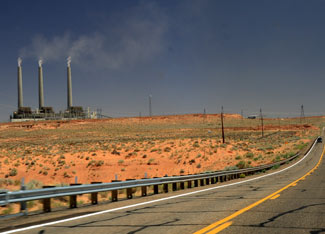

Community opposition, legal challenges and financial uncertainty over future carbon costs are prompting companies to rethink their plans for coal. Since the beginning of 2007, 95 proposed coal-fired power plants have been cancelled or postponed in the United States - 59 in 2007, 24 in 2008, and at least 12 in the first three months of 2009.
This covers nearly half of the 200 or so U.S. coal-fired power plants that have been proposed for construction since 2000. The vast majority of the remaining proposals are essentially on hold, awaiting word on whether the U.S. Environmental Protection Agency (EPA) is going to impose limits on carbon dioxide (CO2) emissions. With further legal challenges ahead and the regulation of CO2 imminent, 2009 may very well witness the end of new coal-fired power plants in the United States.
An April 2007 Supreme Court ruling is proving to be a seminal decision. In Massachusetts v. EPA, the Court ruled that the Clean Air Act gives the agency authority to regulate CO2 emissions, and that the EPA must review whether such emissions pose a threat to public health or welfare. Complying with the Court order, new EPA Administrator Lisa Jackson submitted an endangerment finding to the White House in late March 2009 indicating that human health and welfare are indeed threatened by CO2 emissions. This finding opens the door to regulating CO2 emissions under the Clean Air Act. Such regulation would provide a backup option for curbing emissions if Congress fails to set limits on them through legislation.
Congress, however, is under increasing pressure from grassroots activists to take on Big Coal. Encouraged by calls from former Vice President Al Gore and leading climate scientist James Hansen for civil disobedience to stop the construction of coal-fired power plants, thousands of individuals from across the United States converged on Washington, D.C., on March 2 to protest the coal-burning Capitol Power Plant and to urge Congress to pass legislation to reduce carbon emissions. The rally was the largest act yet of civil disobedience against coal in the United States.
Both Senate Majority Leader Harry Reid and Speaker of the House Nancy Pelosi are strong advocates of regulating carbon emissions, and they are pressing to get a climate bill through Congress before the United Nations Climate Change Conference in Copenhagen, Denmark, in December. If limits on CO2 emissions are imposed via a carbon tax or a cap-and-trade system, the operating cost of fossil-fuel-based power plants would increase. And since the burning of coal releases more CO2 per unit of energy than any other energy source, coal-fired power plants would be hit the hardest. With President Barack Obama calling for a cap-and-trade program to curb carbon emissions, the future for new coal-fired power plants looks tenuous at best.
Even if legislation to regulate carbon emissions does not materialize this year, approval of pending permits for coal-fired power plants is potentially on hold. In November 2008, prior to the endangerment finding, the EPA Environmental Appeals Board determined that the agency’s regional office must consider whether to regulate CO2 emissions before approving an air quality permit for a proposed coal-fired plant in Utah. This not only put the brakes on building the Utah plant, it set a precedent to halt the permitting process for any proposed plant until the EPA determines whether and how to regulate emissions under the Clean Air Act.
At the state level, actions within various branches of government demonstrate the growing distaste for coal. Since May 2007, the governors of Florida, Illinois, Kansas, Michigan, South Carolina, Washington and Wisconsin have all taken action or voiced opposition to new coal-fired power plants.
In her State of the State address in February, Michigan Governor Jennifer Granholm called for an evaluation of “all feasible and prudent alternatives before approving new coal-fired power plants” in Michigan - placing at least five proposed coal plants on hold. Instead of investing in coal plants that would require Michigan to buy coal from Montana and Wyoming, Governor Granholm stated that money spent on improving energy efficiency and tapping renewable energy sources in Michigan would create thousands of new jobs in the state.
This viewpoint does not seem to have occurred to the Kansas legislature, which is attempting for the fourth time in a year to pass a bill that would let Sunflower Electric Power Corporation build a 1,400-megawatt coal-burning power plant in Holcomb, Kan. With vast wind resources, it makes little sense for Kansas to rely on coal, a more expensive out-of-state fuel that creates fewer jobs than wind development for a given investment. Kansas Governor Kathleen Sebelius has vetoed all attempts by the legislature to approve the coal plant.
In June 2008, Georgia Superior Court Judge Thelma Moore, in accordance with the Massachusetts v. EPA ruling, rescinded an air pollution permit issued by the Georgia Department of Natural Resources for the proposed 1,200-megawatt Longleaf coal-fired power plant. Judge Moore’s action halted construction on the plant and marked the first time that CO2 had been cited as a factor in denying an air pollution permit. And in February, Georgia legislators introduced House Bill 276, calling for an immediate moratorium on the construction of new coal-fired power plants in the state and the phase-out by mid-2016 of the burning of any coal extracted by mountaintop removal.
Power companies and utilities are responding to the increasing regulatory uncertainty and mounting public opposition by backing away from coal and turning to clean, renewable sources of energy, such as wind, solar and geothermal.
Dynegy Inc., a wholesale power provider serving 13 states, announced in January that it will no longer continue its joint venture with LS Power Associates L.P. to build up to seven new coal-fired power plants. On the day that Dynegy made the announcement, its stock price rose 19 percent. Several weeks later, Arizona’s largest electric utility, Arizona Public Service Co., submitted a resource plan to the Arizona Corporation Commission indicating that it will not build any new coal-fired power plants because the carbon risk is too high. In late February, Oklahoma Gas & Electric released a plan to turn to renewable energy and defer building any fossil-fired power plants until at least 2020.
The notion that the United States needs additional coal-fired electricity generation to meet electrical demand is misguided. Simply using electricity more efficiently could reap large energy gains. A recent study by the Rocky Mountain Institute found that if the 40 least energy-efficient states raised their electric productivity - the dollars of gross domestic product generated per kilowatt hour of electricity consumed - to the average level of the 10 most efficient states, 62 percent of coal-fired power generation in the United States could be shut down - roughly 370 coal plants.
The events of the past two years illustrate that the door is closing on the prospect of building new coal-fired power plants in the United States. While only five new coal plants, totaling 1,400 megawatts, began operation in 2008, more than 100 wind farms capable of generating 8,400 megawatts came online. Yet this is only the beginning. To have a decent chance of mitigating the potentially catastrophic effects of climate change, our attention should now turn to phasing out all coal-fired electricity generation over the next decade.
|
 TWINXAMOT/FLICKR A coal-fired power plant near Lake Powell in Arizona. Only five new coal-fired power plants opened in the United States in 2008, while 24 proposed coal-fired power plants were scrapped. |
|
|